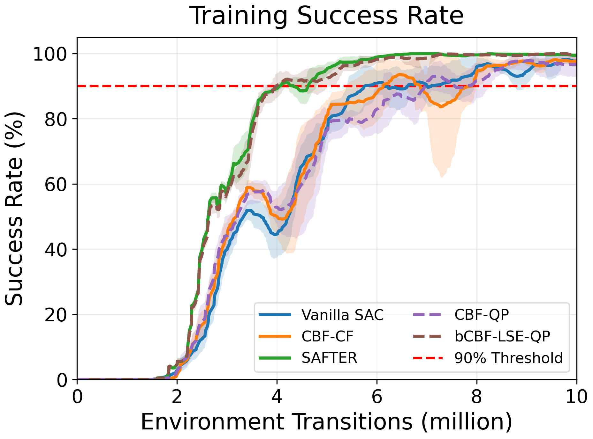
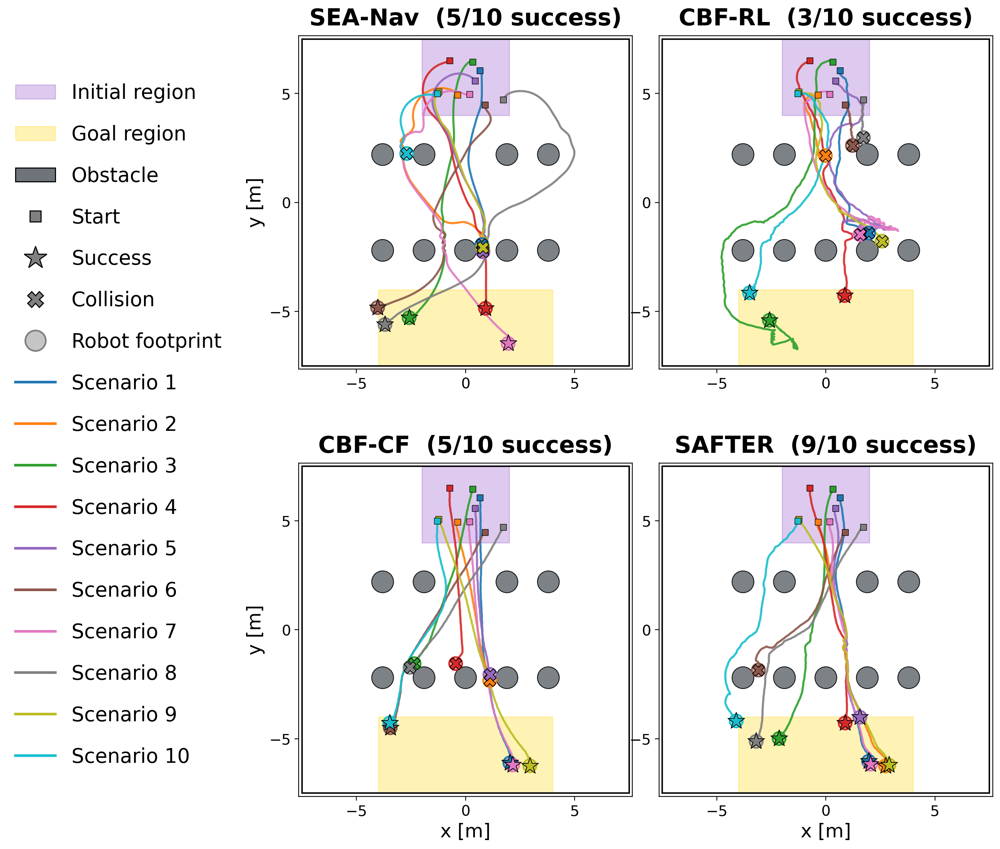

Learning safe policies that generalize to unseen environments is difficult under bounded actuation, where an unsafe decision may become unrecoverable. Conventional control barrier function (CBF) filters enforce only instantaneous safety and ignore future recoverability. We propose SAFTER (Safety-Aware Filtered Training for Efficient and Robust Reinforcement Learning), which embeds a differentiable, closed-form backup-CBF filter into Soft Actor-Critic training. SAFTER unifies current safety, finite-horizon backup safety, terminal recoverability, and input admissibility into a single differentiable certificate. Its CBF condition yields an exact minimum-intervention projection without iterative online optimization. In quadruped navigation, SAFTER reaches 90% training success with 30.6% fewer transitions than vanilla SAC and 34.1–35.1% fewer than CBF-filtered SAC baselines. In unseen environments with increasing geometric shift, it improves success by up to 49.0, 37.4, and 39.0 percentage points over CBF–RL, SEA–Nav, and CBF–CF, respectively. It also outperforms a matched bCBF–QP baseline by 13.0 and 8.8 points under medium and high shift. Ablations identify differentiation through the exact analytical filter Jacobian as a key source of this robustness. These results show that recoverability-aware filtering can serve not only as a runtime safety shield but also as a learning mechanism for sample-efficient, robust policy learning.
All methods are evaluated in MuJoCo with a Unitree Go2 under a frozen 50 Hz low-level locomotion policy and a 10 Hz high-level LiDAR-based policy. SR, TR, and FR denote success, timeout, and failure rates (%).

Training success rates under the same training environments (five seeds, 256 parallel environments). SAFTER reaches 90% success after 4.06±0.08M transitions, 30.6% fewer than Vanilla SAC and 34.1–35.1% fewer than the current-state CBF baselines. The matched bCBF–LSE–QP (4.13±0.43M) behaves similarly, indicating the gain is primarily associated with predictive backup recoverability.
Table 1. Training-map performance with each method's runtime safety filter disabled or enabled.
| Method | Filter disabled | Filter enabled | ||||
|---|---|---|---|---|---|---|
| SR ↑ | TR ↓ | FR ↓ | SR ↑ | TR ↓ | FR ↓ | |
| SEA–Nav | 89.7±2.4 | 0.0±0.0 | 10.3±2.4 | 91.2±2.9 | 0.0±0.0 | 8.8±2.9 |
| CBF–RL | 84.3±8.2 | 5.9±5.2 | 9.8±7.1 | 84.8±7.4 | 5.9±5.2 | 9.3±6.6 |
| CBF–CF | 76.6±13.8 | 2.7±6.3 | 20.7±15.8 | 90.1±8.2 | 1.9±4.5 | 8.0±8.5 |
| SAFTER (Ours) | 95.1±7.1 | 0.0±0.0 | 4.9±7.1 | 99.7±1.2 | 0.0±0.0 | 0.3±1.2 |
SAFTER achieves 95.1% success even without its runtime filter (99.7% with it), suggesting that recoverability-aware training promotes nominal behavior compatible with the prescribed backup strategy.
Table 2. Safety-filter runtime (mean ± std over 300 timed repetitions, NVIDIA RTX 4090). Speedup is relative to the direct bCBF–QP.
| Method | Batch = 1 | Batch = 100 | ||||
|---|---|---|---|---|---|---|
| Total (ms) | Synthesis (ms) | Speedup | Total (ms) | Synthesis (ms) | Speedup | |
| bCBF–QP | 30.546±0.324 | 28.369±0.194 | 1.00× | 2504.789±22.463 | 2487.383±16.949 | 1.00× |
| bCBF–LSE–QP | 5.732±0.456 | 3.342±0.405 | 5.33× | 7.084±0.569 | 4.588±0.481 | 353.58× |
| SAFTER (Ours) | 2.495±0.312 | 0.102±0.011 | 12.24× | 2.529±0.283 | 0.106±0.014 | 990.43× |
SAFTER has the lowest total latency at both batch sizes: 12.24× and 990.43× lower than the direct bCBF–QP, and 2.30× and 2.80× faster than the matched bCBF–LSE–QP. Since the QP baselines use different solvers (OSQP and qpth), comparisons against the direct formulation reflect end-to-end implementation latency rather than a solver-isolated speedup.
Each method uses a fixed checkpoint selected independently of unseen-map performance, evaluated over 25 seeds with 20 episodes each (500 episodes per environment).

Representative trajectories in the Medium-Shift environment (10 scenarios). Purple and yellow regions denote the initial and goal regions, squares mark initial positions, stars successful terminations, crosses collision terminations, and faint circles indicate the robot footprint. SAFTER succeeds in 9/10 scenarios, versus 5/10 for SEA–Nav, 3/10 for CBF–RL, and 5/10 for CBF–CF.
Table 3. Navigation performance across unseen static environments (mean ± std across 25 evaluation-seed rates).
| Method | Low-Shift | Medium-Shift | High-Shift | ||||||
|---|---|---|---|---|---|---|---|---|---|
| SR ↑ | TR ↓ | FR ↓ | SR ↑ | TR ↓ | FR ↓ | SR ↑ | TR ↓ | FR ↓ | |
| SEA–Nav | 93.8±6.7 | 0.0±0.0 | 6.2±6.7 | 50.6±10.9 | 0.0±0.0 | 49.4±10.9 | 0.0±0.0 | 0.0±0.0 | 100.0±0.0 |
| CBF–RL | 61.2±10.7 | 13.6±6.7 | 25.2±9.8 | 46.2±11.6 | 17.2±7.6 | 36.6±9.2 | 31.0±10.0 | 15.4±8.9 | 53.6±12.2 |
| Vanilla SAC | 34.2±10.1 | 0.0±0.0 | 65.8±10.1 | 20.8±6.9 | 0.0±0.0 | 79.2±6.9 | 17.4±8.3 | 0.0±0.0 | 82.6±8.3 |
| CBF–QP | 58.8±9.4 | 0.2±1.0 | 41.0±9.2 | 43.2±11.0 | 0.0±0.0 | 56.8±11.0 | 18.0±6.9 | 0.0±0.0 | 82.0±6.9 |
| CBF–CF | 69.0±11.5 | 0.0±0.0 | 31.0±11.5 | 48.4±8.4 | 0.0±0.0 | 51.6±8.4 | 33.8±12.2 | 0.0±0.0 | 66.2±12.2 |
| bCBF–LSE–QP | 99.4±1.7 | 0.0±0.0 | 0.6±1.7 | 75.0±9.7 | 0.0±0.0 | 25.0±9.7 | 67.4±11.7 | 0.0±0.0 | 32.6±11.7 |
| SAFTER (Ours) | 98.8±2.2 | 0.0±0.0 | 1.2±2.2 | 88.6±7.3 | 0.0±0.0 | 11.4±7.3 | 61.4±10.2 | 0.0±0.0 | 38.6±10.2 |
SAFTER achieves 98.8%, 88.6%, and 61.4% success on Low-, Medium-, and High-Shift, exceeding Vanilla SAC and both current-state CBF baselines in all three environments. The matched bCBF–LSE–QP performs similarly strongly (99.4%, 75.0%, 67.4%), indicating that the robustness gain is primarily associated with predictive backup recoverability rather than the analytical realization alone.
Table 4. Ablation of the projection Jacobian and correction reward on unseen environments. Exact and Identity use the same forward safety-filter map and differ only in the backward differentiation through the analytical projection.
| Projection Jacobian |
Correction Reward |
Low-Shift | Medium-Shift | High-Shift | ||||||
|---|---|---|---|---|---|---|---|---|---|---|
| SR ↑ | TR ↓ | FR ↓ | SR ↑ | TR ↓ | FR ↓ | SR ↑ | TR ↓ | FR ↓ | ||
| Exact | On | 98.8±2.2 | 0.0±0.0 | 1.2±2.2 | 88.6±7.3 | 0.0±0.0 | 11.4±7.3 | 61.4±10.2 | 0.0±0.0 | 38.6±10.2 |
| Identity | On | 89.8±6.0 | 0.0±0.0 | 10.2±6.0 | 41.6±9.3 | 0.0±0.0 | 58.4±9.3 | 6.2±4.4 | 0.0±0.0 | 93.8±4.4 |
| Exact | Off | 95.6±4.9 | 4.2±4.9 | 0.2±1.0 | 94.4±4.4 | 3.8±3.9 | 1.8±3.5 | 76.2±9.2 | 3.2±3.8 | 20.6±8.3 |
| Identity | Off | 76.8±7.1 | 0.0±0.0 | 23.2±7.1 | 9.0±6.1 | 0.0±0.0 | 91.0±6.1 | 2.0±3.5 | 0.0±0.0 | 98.0±3.5 |
Replacing the Exact projection Jacobian with the Identity approximation reduces success by up to 85.4 percentage points across the evaluated distribution shifts. Removing the correction reward has a mixed effect: the Exact-Jacobian policy improves from 88.6% to 94.4% on Medium-Shift and from 61.4% to 76.2% on High-Shift, while decreasing from 98.8% to 95.6% on Low-Shift. Propagating the analytical projection Jacobian therefore materially improves robustness, whereas minimizing filter intervention is not uniformly beneficial under larger geometric shifts.